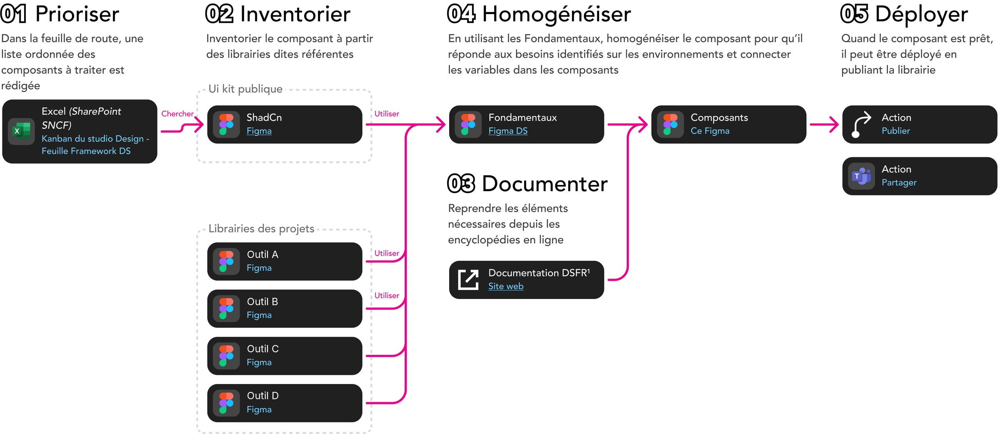

01
Process · Design system
Un process d'intégration en 5 étapes
Intégrer les librairies des projets au design system commun : prioriser, inventorier, documenter, homogénéiser, déployer.
Les noms des outils internes ont été anonymisés.

← SNCF Gares & Connexions · parties 01 à 09
Cas d’étude 01 · SNCF Gares & Connexions
Process · Design system
Intégrer les librairies des projets au design system commun : prioriser, inventorier, documenter, homogénéiser, déployer.
Les noms des outils internes ont été anonymisés.

Organisation · Figma
Les documents de conception sont centralisés dans un même espace, projet par projet. Un équivalent a été mis en place dans SharePoint pour partager les documents.

Organisation · Projets
Cette organisation allège aussi la gestion des droits d'accès.

Projet transverse · Design System

Construction · Librairie Origin
Le sommaire de la librairie Origin, conçue pour l'application Ma Gare sur Android et iOS : huit parties, des fondamentaux aux modèles de pages, en passant par les atomes, les molécules et une grille de test avant publication.

Origin · Fondamentaux
Couleurs et design tokens, typographie, espacements, arrondis et grilles, ombres et focus, icônes, pictogrammes, motion… ainsi qu'un kit d'accessibilité RGAA/RAAM et une méthodologie de design pour documenter les rendus.

Origin · Page
Un composant de type page, décliné en variantes (départs, arrivées, modes de transport) et relié au fichier Productions pour le flow et les spécifications.

Origin · Bloc fonctionnel
Un bloc fonctionnel documenté avec ses états (chargement, à l'heure, retardé, supprimé), ses variantes par mode et la liste des composants qui le constituent.

Conception · Designers
La structure de ce fichier a été construite en échangeant avec les designers sur leur fichier idéal.

Livraison · Ready to Dev
La structure de ce fichier a été construite en échangeant avec les développeurs sur leur fichier idéal.

Production · Vue éclatée
La structure de ce fichier a été construite en échangeant avec les product owners et les testeurs sur leur fichier idéal.

Pilotage · Cérémonies
Un fichier de pilotage recense l'ensemble des composants du design system et leur statut.

Communication · Teams
Des canaux dédiés permettent aux équipes de développement et aux designers d'échanger directement : un canal général, un pour le framework DS, puis un par produit (Live IHM, Live Socle, Live MaasTransit, Live Multimodal, MaGare).